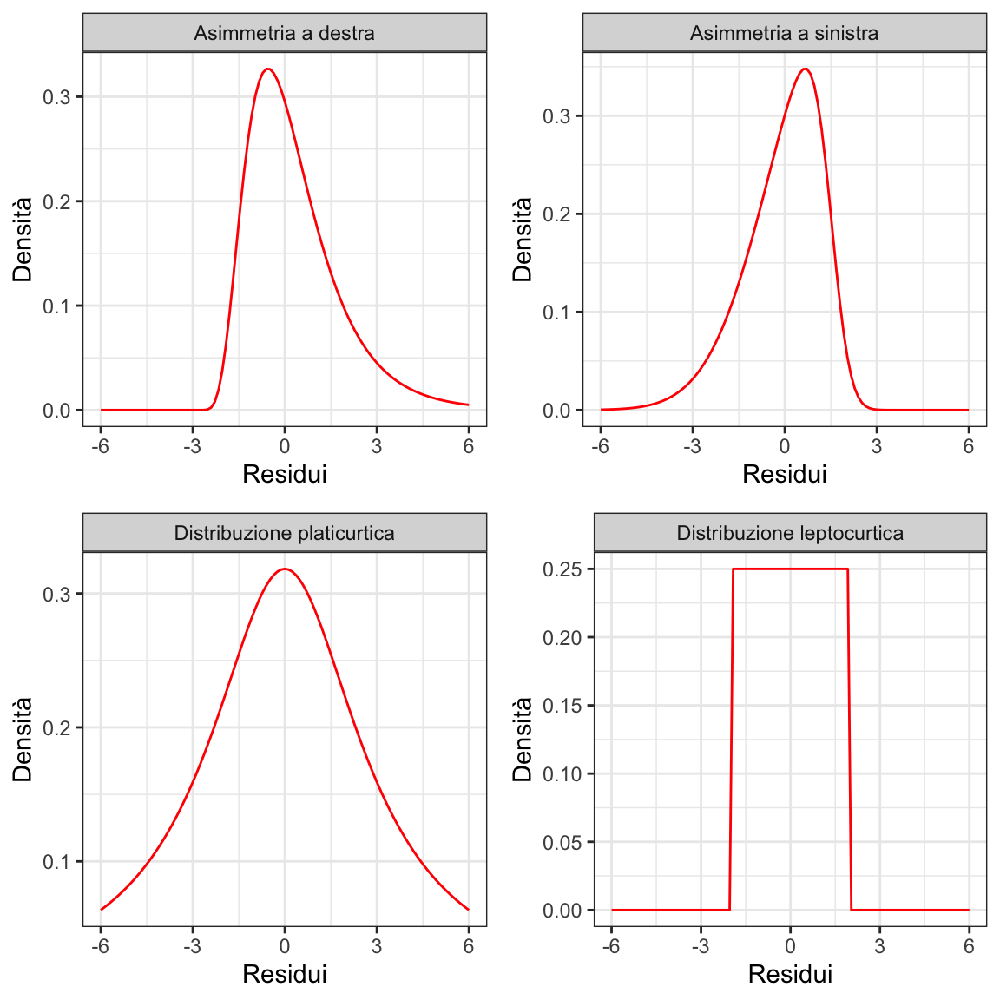
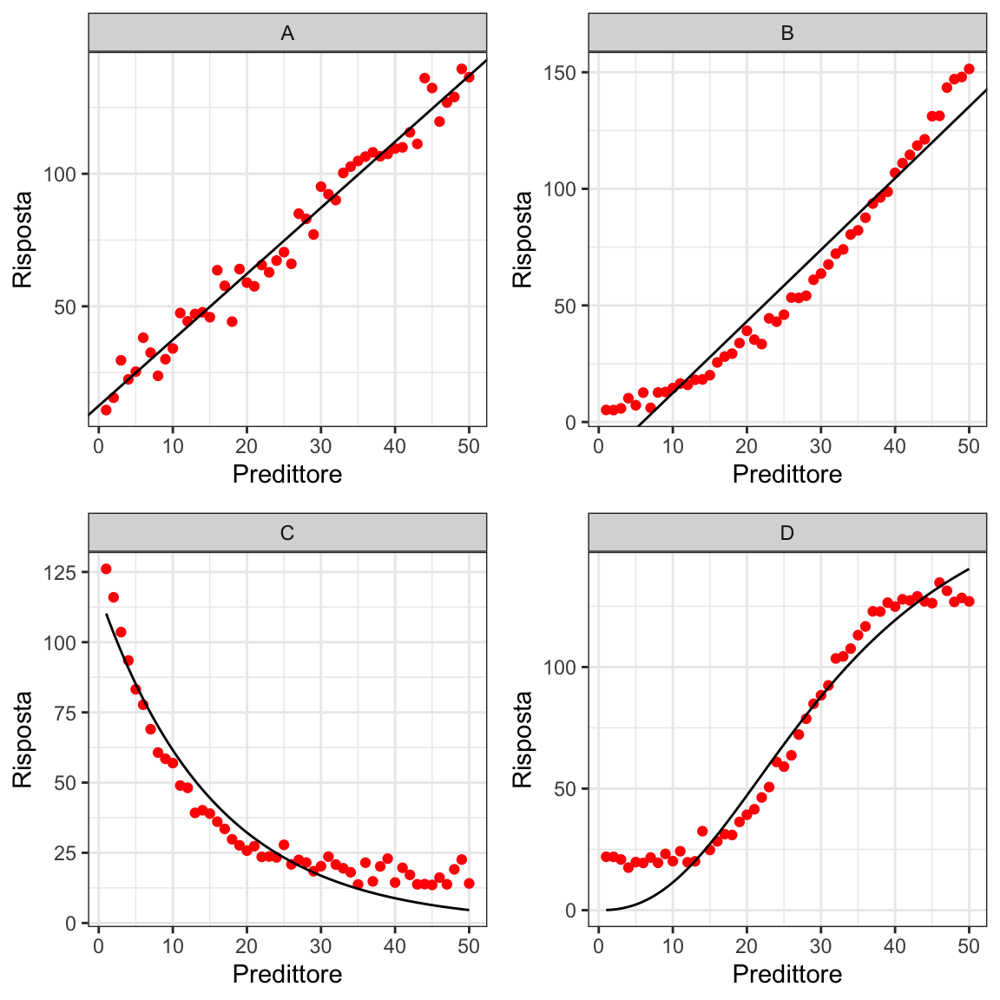
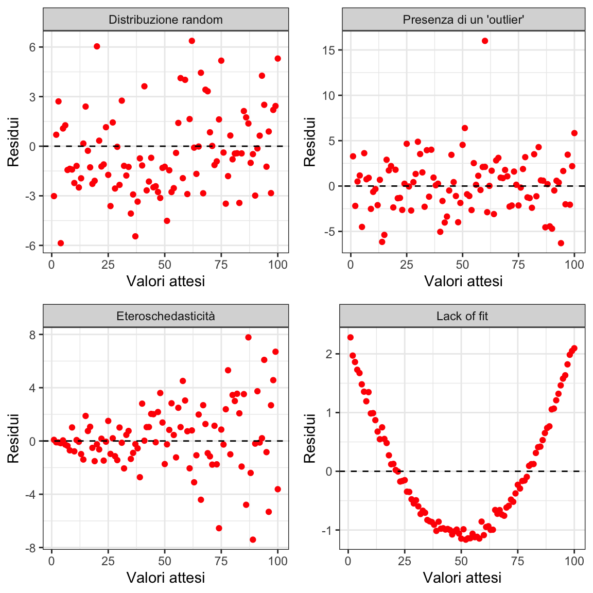
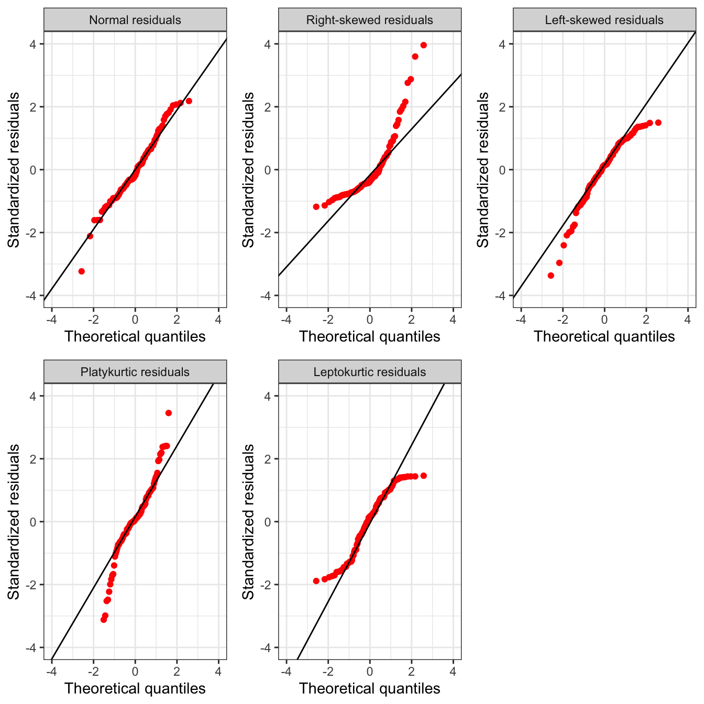
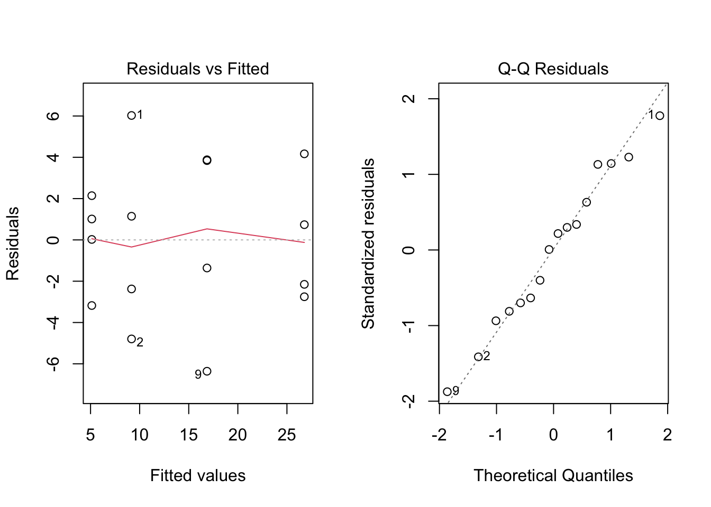
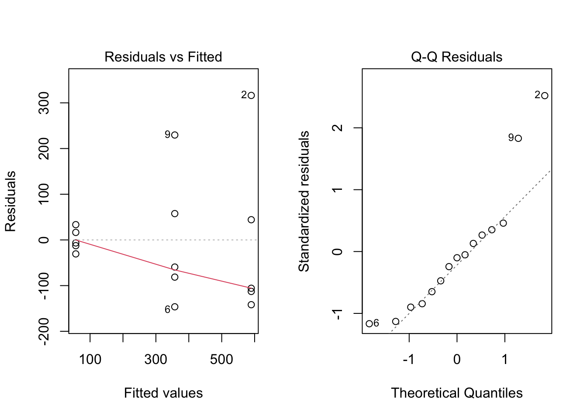
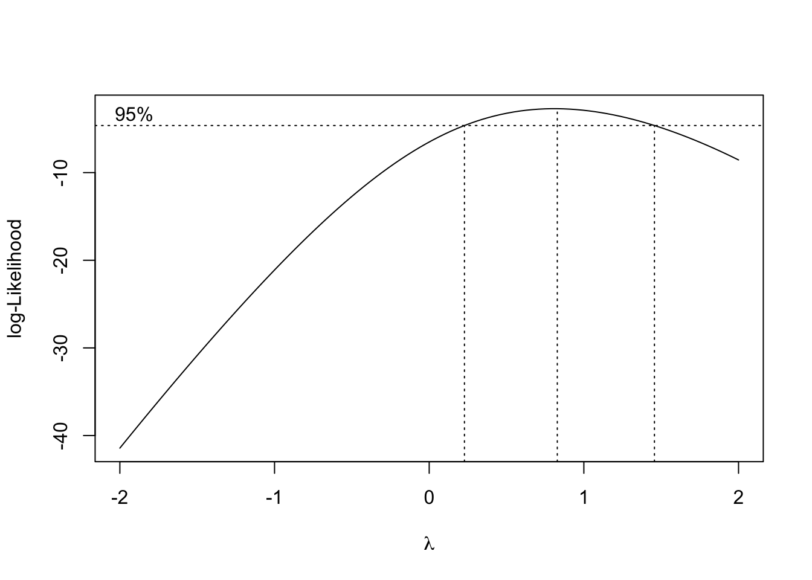
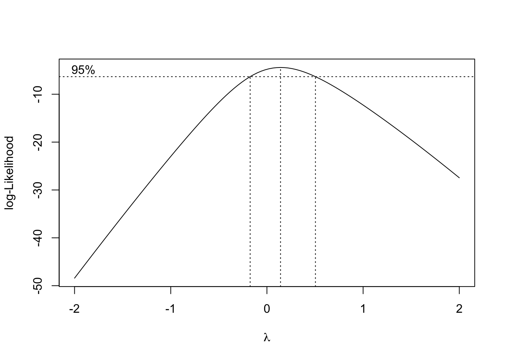

8 Verifica dei modelli
Nei capitoli precedenti, abbiamo studiato i modelli come “strumenti” per descrivere le relazioni causa-effetto tra le variabili sperimentali e per trarre conclusioni testando ed eventualmente rigettando ipotesi scientifiche rilevanti. Tuttavia, abbiamo anche visto che i modelli statistici e le inferenze su di essi basate, assumono che siano verificate alcune condizioni fondamentali:
- il modello fornisce una buona descrizione dei dati sperimentali (bontà di adattamento);
- i residui sono indipendenti l’uno dall’altro (indipendenza);
- i residui hanno una distribuzione gaussiana di probabilità (normalità);
- tutti i residui hanno la stessa varianza (omoschedasticità).
Oltre alle ipotesi di cui sopra, i dati osservati devono rispettare anche un altro requisito essenziale: l’assenza di osservazioni anomale (outliers), che differiscono inspiegabilmente da tutte le altre e producono residui negativi o positivi enormi. Queste osservazioni possono essere molto influenti, producendo effetti negativi sull’affidabilità delle stime e dei test d’ipotesi.
Purtroppo, bisogna riconoscere che i problemi relativi alle assunzioni di base sono tutt’altro che infrequenti, come vedremo in seguito.
8.1 Deviazioni rispetto alle assunzioni di base
La mancanza di ‘bontà d’adattamento’ (più semplicemente in inglese lack of fit o LOF) si verifica quando le previsioni del modello deviano sistematicamente rispetto a quanto osservato, ad esempio quando abbiamo utilizzato un modello modello di regressione lineare per descrivere una risposta curvilinea. In caso di lack of fit, dovremo concludere che i dati e il modello non si supportano a vicenda e, quindi, che il modello “non consente di rispondere alle domande scientifiche del ricercatore” (Kass et al. 2016).
La mancanza d’indipendenza dei residui si verifica quando i residui contengono non solo errori casuali, ma anche una componente sistematica, che crea una sorta di ‘parentela’ (effetto ‘gruppo’) tra le osservazioni. Ad esempio, se il disegno è a blocchi randomizzati e l’effetto del blocco non è stato incluso nel modello, se immaginiamo che un blocco è più ‘fertile’ degli altri, i residui dello stesso blocco condivideranno questo effetto positivo e tenderanno ad essere più simili tra loro che non i residui appartenenti a blocchi diversi. Quindi i residui saranno ‘raggruppati’ (o meglio ‘raggruppabili’) e non realmente indipendenti (vedi anche Capitolo 12).
In generale, la mancanza d’indipendenza può verificarsi per:
- intrusioni sistematiche,
- presenza di fattori di raggruppamento non considerati nel modello,
- selezione errata del modello, o
- mancanza di randomizzazione adeguata (vedere anche Sezione 4.6 e Capitolo 12).
La mancanza di indipendenza è considerata una delle assunzioni di base più pericolose da violare, poiché comporta un rischio elevato di errore di I specie (Frey et al. 2024), ovvero un rischio maggiore di rifiutare erroneamente un’ipotesi nulla vera (falso positivo).
La normalità viene violata quando i residui del modello non “riflettono” la forma tipica di una distribuzione gaussiana, ovvero quando sono asimmetrici (la media non è uguale alla mediana) o quando le code sono troppo ‘alte’ (distribuzione platicurtica: troppi valori estremi) o troppo ‘basse’ (distribuzione leptocurtica: i valori sono troppo “concentrati” attorno alla media) (Fig. 8.1; vedi anche il Cap. 5). La non-normalità può anche anche essere dovuta alla presenza di outliers dovuti all’effetto di errori casuali di entità eccezionale (ad esempio, procedure difettose, scarso controllo o intrusioni di qualsiasi tipo). In questo caso, le stime delle medie e delle deviazioni standard sono inaffidabili e possono portare ad un’errata interpretazione dei risultati sperimentali (Cochran 1947).
In assenza di outliers, la non normalità è invece considerata meno dannosa di altre deviazioni (Knief e Forstmeier 2021), in quanto non provoca forti distorsioni nella stima dei parametri od un incremento del rischio di errore di I specie. Tuttavia, è necessario essere cauti, poiché la non-normalità può essere associate ad altri tipi di deviazioni più pericolosi, come l’eteroschedasticità.
L’eteroschedasticità può verificarsi, ad esempio, quando i trattamenti sperimentali producono effetti moltiplicativi (ad esempio: 1.5 volte la produzione del primo trattamento in ordine alfabetico) e non additivi (ad esempio: +5 t/ha rispetto al primo trattamento in ordine alfabetico, come ipotizzato nel Cap. 4). Mentre l’effetto additivo si ripercuote sulla media, ma non sulla deviazione standard, l’effetto moltiplicativo si ripercuote su entrambe le statistiche, in modo tale che qesse diventino proporzionali tra loro (quando la media aumenta, aumenta proporzionalmente anche la deviazione standard)1.
Oltre agli effetti moltiplicativi, altre cause comuni di eteroschedasticità includono attacchi di parassiti e altre intrusioni, nonché un grado inferiore di controllo in alcune parti dell’esperimento di campo. È stato dimostrato che l’eteroschedasticità si traduce in una stima distorta della deviazione standard dei residui e porta a P-value non validi, così che il reale rischio d’errore di I specie può essere anche molto diverso da quello nominale (Glass et al. 1972).
8.2 Scoprire le violazioni
Il rispetto di alcune assunzioni di base, come l’indipendenza dei residui e l’assenza di errori sistematici, è garantito dall’adozione di un disegno sperimentale a ‘regola d’arte’, cioè basato su repliche indipendenti e correttamente randomizzate. Inoltre, è necessario controllare che il modello statistico selezionato per l’analisi dei dati sia adeguato al disegno sperimentale ed includa anche gli eventuali fattori di raggruppamento, che siano stati eventualmente introdotti in fase di disegno sperimentale (i blocchi negli RCBD, le righe/colonne nei quadrati latini, le ‘main-plots’ negli split-plot, ecc.). L’inclusione di questi fattori di raggruppamento è raccomandata anche quando il loro effetto non risulti statisticamente significativo (Frey et al. 2024); nei capitoli successivi vedremo come gestire questa situazione, anche nel caso dei disegni a misure ripetute, a split-plot o a strip-plot.
Se l’indipendenza dei residui è garantita già in fase di disegno sperimentale, l’assenza di outliers, la bontà di adattamento, l’omogeneità delle varianze e la normalità dei residui debbono essere oggetto di attente verifiche a posteriori, cioè dopo aver stimato il modello e calcolato i residui stessi, come indicato nel Cap. 4. La verifica deve essere particolarmente accurata in tre situazioni:
- Quando la risposta è costituita da conteggi o proporzioni, che sono molto raramente normali e omoschedastici.
- Quando la risposta è quantitativa e le differenze tra le medie dei gruppi sono molto elevate (ad esempio, superiori a un ordine di grandezza) perché, per questi dati, le varianze sono raramente omogenee.
- Quando abbiamo adattato un modello di regressione, che potrebbe deviare sistematicamente dalle risposte osservate.
Per queste verifiche, possiamo utilizzare sia metodi grafici che metodi formali, basati sul test d’ipotesi (Anscombe e Tukey 1963), come vedremo nei paragrafi seguenti.
8.3 Analisi grafica dei residui
Rappresentare i residui in un grafico appropriato permette di evidenziare chiaramente la gran parte dei problemi e dovrebbe, pertanto, essere considerato come una pratica routinaria. Esistono diversi tipi di grafici, ma ne elenchiamo fondamentalmente tre, che possono essere facilmente prodotti con R o altri software statistici.
8.3.1 Grafico dei valori osservati, aumentato con le previsioni del modello
Per tutti i tipi di modelli di regressione, lo strumento più importante per verificare la bontà di adattamento è un grafico a dispersione che rappresenti la risposta osservata sulle ordinate e il predittore sulle ascisse, integrato con le previsioni del modello. In questo grafico, le previsioni dovrebbero ‘seguire’ fedelmente i dati osservati (Fig. 8.2 A) senza mostrare alcun segno di deviazioni sistematiche, come quelle rappresentate nella Figura 8.2 B, C e D.

8.3.2 Grafico dei residui contro i valori attesi
Il metodo grafico più utilizzato per l’analisi dei residui consiste nel plottare i residui stessi contro i valori attesi. Se non vi sono problemi, i punti nel grafico dovrebbero essere distribuiti in modo assolutamente casuale, come nel grafico in alto a sinistra in Figura 8.3. Le osservazioni aberranti (outliers) appaiono invece come punti isolati rispetto agli altri (Fig. 8.3, in alto a destra). L’eterogeneità delle varianze è invece indicata da residui che si allargano o si stringono procedendo verso i margini del grafico (Fig. 8.3, in basso a sinistra), facendo emergere una sorta di proporzionalità tra media e varianza. Infine, la mancanza di adattamento nei modelli di regressione può essere visibile attraverso la comparso di deviazioni sistematiche, come il raggruppamento di residui postivi e negativi in zone diverse del grafico, che possono indicare che il modello sovrastima le osservazioni quando sono, ad esempio, basse e le sottostima quando sono alte (Fig. 8.3, in basso a destra).

8.3.3 QQ-plot
Per evidenziare problemi di non-normalità, possiamo utilizzare un QQ-plot (quantile-quantile plot), che è un grafico a dispersione con i residui standardizzati nelle ordinate e i rispettivi percentili di una distribuzione normale standardizzata nelle ascisse. Per semplicità, evitiamo ulteriori dettagli, che possono essere comunque reperiti nel blog che accompagna questo libro2. Queste due entità (i residui standardizzati e i corrispondenti percentili di una distribuzione normale standardizzata) dovrebbero essere largamente coincidenti, e quindi i punti nel grafico dovrebbero giacere lungo la bisettrice del primo e del terzo quadrante (Fig. 8.4, in alto a sinistra). Ogni deviazione rispetto a questo pattern, indica problemi di non-normalità dei residui, come evidenziato in tutti i pannelli della Figura 8.4, a parte quello in alto a sinistra.

8.4 Metodi formali e Test d’ipotesi
La valutazioni illustrate in precedenza sono basate sulla semplice osservazione di uno o più grafici, ma sono considerate sufficientemente attendibili per la maggior parte delle situazioni. Tuttavia, esistono anche test statistici formali che consentono di saggiare l’ipotesi nulla di ‘assenza di deviazioni’, rifiutandola qualora il P-level fosse inferiore a 0.05.
Rispetto alle procedure grafiche, il test d’ipotesi formale può dare una miglior sensazione di obiettività, anche se non è tutto oro quel che luccica. Infatti, questi test possono creare più problemi di quanti ne risolvano dato che, ad esempio, richiedono campioni di grandi dimensioni e fanno affidamento su assunzioni di base molto stringenti, tanto che, alla fine, l’affidabilità dei risultati è spesso discutibile (Kozak e Piepho 2018). Per questi motivi, il loro utilizzo è sconsigliato e dovrebbe essere riservato a supportare situazioni complesse in cui i metodi grafici non forniscono risposte sufficientemente chiare.
Le procedure presentate in questo capitolo sono state selezionate perché ampiamente utilizzate e prontamente disponibili in R.
8.4.1 Test di Levene per l’omogeneità delle varianze
Secondo gli studi di Conover et al. (1981), il test di Levene è una delle procedure più affidabili per saggiare l’ipotesi di omoschedasticità nei modelli con predittori nominali; consiste nell’eseguire l’analisi della varianza di una ‘pseudo-risposta’, ottenuta sostituendo ciascun dato osservato con il valore assoluto della differenza rispetto al ‘centro’ del gruppo a cui appartiene (valore assoluto di dati ‘group-centered’).
Inizialmente, Levene propose di utilizzare come centro di gruppo la media; l’idea di fondo è semplice: i dati ‘centrati’ per gruppo hanno, per definizione’ medie dei gruppi tutte pari a zero; se però si rimuovono i segni negativi, prendendo il valore assoluto dei dati ’centrati, le medie dei gruppi divegono diverse tra loro e diverse da zero e sono tanto più alte quanto più la varianza di gruppo è alta. Questo concetto sarà più semplice da comprendere utilizzando un esempio pratico. Consideriamo due gruppi sperimentali A <- c(19, 20, 21) e B <- c(26, 30, 34), che hanno, rispettivamente, medie pari a 20 e 30, e varianze pari a 1 e 16. Sottraendo dalle osservazioni di ogni gruppo la media del gruppo stesso, otteniamo le pseudo-osservazioni Ac <- c(-1, 0, 1) e Bc <- c(-4, 0, 4), dova entrambe le medie sono pari a zero, mentre le varianze restano inalterate. Se escludiamo i segno negativi, le medie dei due gruppi divengono pari, rispettivamente, a 2/3 e 8/3, mostrando come il gruppo con più alta varianza abbia prodotto pseudo-osservazioni con media più alta. Se la differenza tra le due medie delle pseudo-osservazioni è significativa, l’ipotesi nulla di omogeneità delle varianze può essere rigettata.
Lavori successivi (Brown e Forsythe 1974) hanno mostrato che è preferibile sostituire la media del gruppo con la sua mediana, per ottenere un test più robusto contro le possibili deviazioni dalla normalità. Questo test è noto come test di Brown-Forsythe, oppure come test di Levene robusto o, ancora più semplicemente, come test di Levene (anche se il test di Levene vero e proprio sarebbe l’altro, quello non-robusto). Entrambi i test (Levene e Brown-Forsythe) sono disponibili nella funzione leveneTest() del package car, ma il secondo è largamente preferito e considerato come la procedura di ‘default’.
Un esempio di questo test è fornito nel Riquadro 8.1, che confronta due genotipi di mais in un disegno completamente randomizzato con 11 repliche. Il secondo genotipo (B) presenta una varianza maggiore e il test di Levene risulta significativo (il valore P è inferiore a 0.05 e l’ipotesi nulla di omoschedasticità viene rifiutata). I due test (Levene e Brown-Forsythe) producono risultati simili, il che suggerisce che i dati originali non si discostino significativamente dalla normalità.
# Riquadro 8.1
# Test d'ipotesi sull'omogeneità delle varianze
# Test di Levene
library(car)
# Immissione dati
dataset <- data.frame(Genotype = c("A", "A", "A", "A", "A",
"A", "A", "A", "A", "A",
"A", "B", "B", "B", "B",
"B", "B", "B", "B", "B",
"B", "B"),
Yield = c(10.0, 10.7, 11.9, 10.3, 10.0,
7.8, 10.4, 9.7, 10.0, 9.2, 9.7,
15.0, 11.2, 13.7, 11.9, 9.4,
10.6, 12.6, 10.1, 9.9, 15.3, 12.2))
head(dataset)
## Genotype Yield
## 1 A 10.0
## 2 A 10.7
## 3 A 11.9
## 4 A 10.3
## 5 A 10.0
## 6 A 7.8
dataset$Genotype <- factor(dataset$Genotype)
# Adattamento del modello
mod <- lm(Yield ~ Genotype, data = dataset)
# Centratura dei dati, per sottrazione delle media di ogni genotipo (Test di Levene)
GroupMeans <- tapply(dataset$Yield, dataset$Genotype, mean)
YieldC <- dataset$Yield - rep(GroupMeans, each = 11)
# Ri-adattamento dello stesso modello sostituendo la produzione con la
# pseudo-variabile in valore assoluto. Analisi della varianza
modlevene <- lm(abs(YieldC) ~ dataset$Genotype)
anova(modlevene)
## Analysis of Variance Table
##
## Response: abs(YieldC)
## Df Sum Sq Mean Sq F value Pr(>F)
## dataset$Genotype 1 5.2129 5.2129 5.8944 0.02475 *
## Residuals 20 17.6878 0.8844
## ---
## Signif. codes: 0 '***' 0.001 '**' 0.01 '*' 0.05 '.' 0.1 ' ' 1
# Centratura dei dati, per sottrazione delle mediana di ogni genotipo
# (Test di Brown-Forsythe)
GroupMedians <- tapply(dataset$Yield, dataset$Genotype, median)
YieldC <- dataset$Yield - rep(GroupMedians, each = 11)
# Ri-adattamento dello stesso modello sostituendo la produzione con la
# pseudo-variabile in valore assoluto. Analisi della varianza
modlevene <- lm(abs(YieldC) ~ dataset$Genotype)
anova(modlevene)
## Analysis of Variance Table
##
## Response: abs(YieldC)
## Df Sum Sq Mean Sq F value Pr(>F)
## dataset$Genotype 1 5.2041 5.2041 5.7245 0.02666 *
## Residuals 20 18.1818 0.9091
## ---
## Signif. codes: 0 '***' 0.001 '**' 0.01 '*' 0.05 '.' 0.1 ' ' 1
# Test (non-robusto) di Levene con R (centratura con le medie)
leveneTest(mod, center = "mean")
## Levene's Test for Homogeneity of Variance (center = "mean")
## Df F value Pr(>F)
## group 1 5.8944 0.02475 *
## 20
## ---
## Signif. codes: 0 '***' 0.001 '**' 0.01 '*' 0.05 '.' 0.1 ' ' 1
# Test (robusto) di Brown-Forsythe con R (centratura con le medie)
# In R si utilizza comunque il nome Test di Levene
leveneTest(mod)
## Levene's Test for Homogeneity of Variance (center = median)
## Df F value Pr(>F)
## group 1 5.7245 0.02666 *
## 20
## ---
## Signif. codes: 0 '***' 0.001 '**' 0.01 '*' 0.05 '.' 0.1 ' ' 18.4.2 Test di Shapiro-Wilk per la normalità
Il test di Shapiro-Wilk per la normalità fornisce la statistica W e un valore P per l’ipotesi nulla che i residui siano distribuiti normalmente. La procedura di test non è così semplice come quella del test di Levene e i calcoli manuali non sono altrettanto facili da eseguire. Tuttavia, possiamo utilizzare la funzione shapiro.test() in R, passando i residui del modello come argomento.
8.4.3 Altri test
Vale la pena menzionare alcune tecniche numeriche per l’individuazione di valori anomali, come i metodi proposti da Anscombe e Tukey (1963) e Grubbs (1969).
8.5 Esempio 8.1: Analisi dei residui per il dataset “mixture”
Abbiamo eseguito un esperimento in vaso, nel quale abbiamo utilizzato quattro trattamenti erbicidi:
- Metribuzin
- Rimsulfuron
- Metribuzin + rimsulfuron
- Testimone non trattato
Lo scopo dell’esperimento era quello di verificare se la miscela metribuzin e rimsulfuron è più efficace dei due componenti utilizzati separatamente.
A questo fine, sono stati preparati sedici vasi uniformi e sono stati seminati con Solanum nigrum, un importante infestante di alcune colture primaverili estive, come mais e pomodoro. Quando le piante hanno raggiunto lo stadio di 4 foglie vere, sono state trattate con una delle tesi sopra elencate, secondo un disegno sperimentale completamente randomizzato con quattro repliche. Tre settimane dopo i trattamenti, le piante in ciascun vaso sono state raccolte e pesate; minore era il peso, maggiore era l’efficacia degli erbicidi (Onofri et al. 1995).
Per questo esperimento, è possibile adattare un modello ANOVA ad una via (vedere nel Cap. 4), come mostrato nel riquadro 8.2.
# Riquadro 8.2
# Esempio 8.1
# Check dei residui per il dataset `mixture'
# Caricamento dei pacchetti
library(statforbiology)
library(car)
# Caricamento e trasformazione dei dati
mixture <- getAgroData("mixture")
mixture$Treat <- factor(mixture$Treat)
head(mixture)
## Treat Weight
## 1 Metribuzin__348 15.20
## 2 Metribuzin__348 4.38
## 3 Metribuzin__348 10.32
## 4 Metribuzin__348 6.80
## 5 Mixture_378 6.14
## 6 Mixture_378 1.95
# Adattamento del modello
mod1 <- lm(Weight ~ Treat, data = mixture)Dopo aver effettuato la stima dei parametri, i grafici dei residui possono essere ottenuti con la funzione plot(), passando l’oggetto risultante dal fitting come primo argomento. L’altro argomento ‘which’ specifica il tipo di grafico: ‘which = 1’ produce il grafico dei residui verso gli attesi, mentre ‘which = 2’ produce il QQ-plot. Il codice è mostrato nel Riquadro 8.3 ed il risultato è mostrato in Figura 8.5.
# Riquadro 8.3
# Esempio 8.1 [segue]
# Graphical analyses of residuals in R
plot(mod1, which = 1)
plot(mod1, which = 2)
Nessuno dei grafici suggerisce l’esistenza di particolari problematiche e, considerando anche che che non si tratta di un conteggio o una proporzione e che le differenze tra le medie sono piuttosto piccole (meno di un ordine di grandezza), possiamo concludere che non vi sono motivi per dubitare del rispetto delle assunzioni di base.
Sebbene ciò non sia necessario, possiamo confermare la nostra conclusione eseguendo i test di Levene e Shapiro-Wilk. Nel codice sottostante possiamo notare come la funzione leveneTest() richieda come argomento l’oggetto risultante dal fitting lineare, mentre la funzione shapiro.test() richiede i residui del modello.
# Riquadro 8.4
# Esempio 8.1 [segue]
# Test di Levene (robusto) e Shapiro-Wilks
leveneTest(mod1)
## Levene's Test for Homogeneity of Variance (center = median)
## Df F value Pr(>F)
## group 3 1.0698 0.3984
## 12
shapiro.test(residuals(mod1))
##
## Shapiro-Wilk normality test
##
## data: residuals(mod1)
## W = 0.97615, p-value = 0.92578.6 Esempio 8.2: Analisi dei residui per il dataset ‘insects’
Proviamo ad analizzare il dataset ‘insects’, che si riferisce ad un esperimento nel quale quindici piante sono state trattate con tre insetticidi diversi in modo completamente randomizzato, scegliendo cinque piante a caso per insetticida. Tre settimane dopo il trattamento è stato rilevato il numero di insetti presenti su ciascuna pianta.
Per testare l’effetto degli insetticidi, è stato adattato ai dati osservati un modello ANOVA ad una via, utilizzando la variabile ‘Insecticide’ come predittore nominale. In questo caso, il controllo delle deviazioni dagli assunti di base richiede grande attenzione, poiché la variabile di risposta è un conteggio e le statistiche descrittive, che si lasciano per esercizio, indicano che le deviazioni standard sono in qualche modo proporzionali alle medie. Le analisi grafiche dei residui in Figura 8.6 mostrano chiari segni di eteroschedasticità (grafico a sinistra) e residui asimmetrici (grafico a destra). Queste deviazioni sono confermate dal test di Levene (P = 0.043) e dal test di Shapiro-Wilks (P = 0.048).
# Riquadro 8.5
# Esempio 8.2
# Check dei residui per il dataset `insects'
# Caricamento dei pacchetti
library(statforbiology)
library(car)
# Caricamento e trasformazione dei dati
insects <- getAgroData("insects")
insects$Insecticide <- factor(insects$Insecticide)
head(insects)
## Insecticide Rep Count
## 1 T1 1 448
## 2 T1 2 906
## 3 T1 3 484
## 4 T1 4 477
## 5 T1 5 634
## 6 T2 1 211
# Adattamento del modello
mod2 <- lm(Count ~ Insecticide, data = insects)
# Analisi grafica dei residui (non eseguita qui; Vedi Figura 8.6)
# plot(mod2, which = 1)
# plot(mod2, which = 2)
# Test di Levene (robusto)
leveneTest(mod2)
## Levene's Test for Homogeneity of Variance (center = median)
## Df F value Pr(>F)
## group 2 1.0263 0.3878
## 12
# Test di Shapiro-Wilks
shapiro.test(residuals(mod2))
##
## Shapiro-Wilk normality test
##
## data: residuals(mod2)
## W = 0.87689, p-value = 0.04265
8.7 Misure correttive
Se le procedure diagnostiche hanno evidenziato deviazioni rispetto agli assunti di base, è necessario valutare se e come intraprendere azioni correttive. Ovviamente, la ‘terapia’ cambia al cambiare della ‘patologia’.
In presenza di evidenti outliers, è necessario decidere se ignorarli, attribuire loro un peso inferiore durante la fase di analisi o addirittura rimuoverli dal dataset. Quest’ultima soluzione non è raccomandata e dovrebbe essere considerata solo dopo un’attenta valutazione, al fine di evitare la perdita di informazioni importanti e/o la riduzione indebita della variabilità dei dati, con un ingiustificato aumentando della potenza dei test statistici. In particolare, dobbiamo sempre accertarci qualsiasi outlier (i) non faccia parte della popolazione in esame (cioè sia veramente un outlier), (ii) sia causato unicamente da errori o interferenze casuali e (iii) non abbia alcuna relazione con gli effetti dei trattamenti sperimentali in esame. Inoltre, il processo di rimozione dovrebbe riguardare solo un numero molto limitato di osservazioni; in caso contrario, potrebbe essere più opportuno scartare l’intero esperimento e condurne uno nuovo.
Abbiamo visto che il modello impiegato potrebbe non essere adatto a descrivere il dataset (mancanza di adattamento). Gli effetti potrebbero non essere additivi, ma moltiplicativi, oppure potrebbero essere non-lineari. Potrebbero essere presenti asintoti che il nostro modello non è in grado di descrivere, oppure la crescita/decrescita osservata potrebbero essere più lente/veloci di quanto la nostra funzione sia in grado di descrivere. Per tutti questi casi, ovviamente, la strategia più consigliabile è quella di utilizzare un diverso modello, capace di descrivere meglio le osservazioni sperimentali.
Per la non-normalità e la eteroschedasticità, la misura correttiva tradizionale consiste nellò’impiego delle cosiddette trasformazioni stabilizzanti, cone le quali si trasformano i dati in modo da portarli su una metrica che soddisfi le assunzioni di base dei modelli lineari; successivamente si ripete l’analisi sui dati trasformati.
Le trasformazioni possibili sono molte: ad esempio, i libri di testo più tradizionali (ad esempio Snedecor e Cochran 1991) consigliano la trasformazione in radice quadrata per i conteggi, la trasformazione angolare (arcoseno della radice quadrata, vedi Ahrens et al. 1990) per le percentuali e la trasformazione in logaritmo per i dati log-normali, dove le variance sono proporzionali alle medie.
Per evitare di scegliere la trasformazione ‘al buio’, si può impiegare la procedura suggerita da Box e Cox (1964), che permette di confrontare direttamente trasformazioni alternative, selezionando la più adatta al dataset in studio. Gli autori citati in precedenza hanno proposto la seguente famiglia di trasformazioni:
\[ W = \left\{ \begin{array}{ll} \frac{Y^\lambda - 1}{\lambda} & \quad \textrm{if} \,\,\, \lambda \neq 0 \\ \log(Y) & \quad \textrm{if} \,\,\, \lambda = 0 \end{array} \right.\]
dove \(W\) è la variabile trasformata, \(Y\) è la variabile originale e \(\lambda\) è il parametro che definisce la trasformazione 3. Si può vedere che se \(\lambda\) è uguale ad 1, la trasformazione consiste solo nella sottrazione di un valore costante, che non altera la metrica dei dati originali (cioè, è come se i dati non fossero trasformati affatto). Invece, se \(\lamda\) è compreso tra 0 e 1, i valori alti vengono ‘compressi’ e ravvicinati, mentre quelli bassi sono ‘espansi’ ed allontanati, il che consente di correggere un’eventuale asimmetria a destra, rompendo inoltre la proporzionalità tra varianze e medie. D’altra parte, se \(\lambda\) è maggiore di 1, avrà l’effetto opposto e correggerà i residui asimmetrici a sinistra con varianze inversamente proporzionali alle medie. Box e Cox hanno anche definito un metodo di massima verosimiglianza per selezionare il valore ottimale di \(\lambda\) per il dataset in studio, che è implementato nella funzione boxcox() del pacchetto MASS.
8.7.1 Esempio 8.1 (segue)
Sebbene le analisi precedenti abbiano mostrato che il dataset “mixture” non violi significativamente le assunzioni di base per i modelli lineari, possiamo comunque valutare la necessità di una trasformazione, utilizzando la funzione boxcox() contenuta nel package MASS e passando l’oggetto risultante dal fitting come argomento (Riquadro 8.6). Questa funzione restituisce un grafico delle verosimiglianze associate a diversi valori di \(\lambda\) (Fig. 8.7); il valore ottimale sarebbe \(\lambda = 0.83\), ma vediamo che anche \(\lambda = 1\) rientra nell’intervallo di confidenza di \(\lambda\) ottimale e, di conseguenza, si conferma che, per questo dataset, non è necessaria alcuna trasformazione stabilizzante.

8.7.2 Esempio 8.2 (segue)
Il metodo Box-Cox per il dataset “insects” restituisce il grafico in Figura 8.8; il valore di massima verosimiglianza è \(\lambda = 0.14\), e l’intervallo di confidenza del 95% va da poco meno di zero a circa 0.5. Pertanto, per semplicità, selezioniamo \(\lambda = 0\), che corrisponde a una trasformazione logaritmica, motivata anche dal fatto che si tratta di una trasformazione molto nota e, quindi, facilmente comprensibile.

Il processo di analisi dei dati continua quindi trasformando i dati osservati nel loro logaritmo,e ripetendo il processo di stima del modello e sottoponendo a nuova verifica i residui risultanti. E’ importante notare nel codice sottostante come la trasformazione dei dati venga eseguita all’interno del comando di adattamento del modello, il che è utile per motivi che saranno discussi nel prossimo capitolo.
L’analisi grafica dei residui (che si lascia per esercizio) relativi ai dati trasformati non mostra più alcun sintomo di eteroschedasticità e, di conseguenza, il P-level calcolato sulla metrica logaritmica è totalmente affidabile. Procediamo quindi con l’analisi e richiediamo la tabella ANOVA, da cui si deduce che le differenze tra insetticidi sono significative (\(P = 1.49 \times 10^{-6}\). Se confrontiamo le tabelle ANOVA ottenute con e senza trasformazione, osserviamo che vi sono lievi differenze nel P-value e che, in questo caso specifico, l’analisi sui dati trasformati è leggermente più potente. Comunque, l’analisi sui dati non trasformati è sbagliata ed invalida, perché non rispetta le assunzioni di base dei modelli lineari.
# Riquadro 8.7
# Impiego di una transformazione stabilizzante
mod2t <- lm(log(Count) ~ Insecticide, data = insects)
anova(mod2t)
## Analysis of Variance Table
##
## Response: log(Count)
## Df Sum Sq Mean Sq F value Pr(>F)
## Insecticide 2 15.8200 7.9100 50.122 1.493e-06 ***
## Residuals 12 1.8938 0.1578
## ---
## Signif. codes: 0 '***' 0.001 '**' 0.01 '*' 0.05 '.' 0.1 ' ' 1
# Confronto con l'ANOVA sui dati originali
anova(mod2)
## Analysis of Variance Table
##
## Response: Count
## Df Sum Sq Mean Sq F value Pr(>F)
## Insecticide 2 714654 357327 18.161 0.0002345 ***
## Residuals 12 236105 19675
## ---
## Signif. codes: 0 '***' 0.001 '**' 0.01 '*' 0.05 '.' 0.1 ' ' 1Concludiamo con un’osservazione pratica: nel caso in cui risultasse che il valore di \(\lambda\) ottimale è diverso sia da 1 che da 0, la trasformazione \(W = (Y^\lambda - 1)/\lambda\) potrebbe essere semplificata in \(W = Y^\lambda\), in modo da ottenere una metrica più facile da interpretare. Infatti, con \(\lambda = 0.5\) avremmo una semplice trasformazione nella radice quadrata, mentre con \(\lambda = -1\) avremmo l’altrettanto semplice trasformazione nel reciproco. Il Riquadro 8.8 mostra un esempio dell’equivalenza della trasformazione di Box e Cox nella forma originale e in quella semplificata: possiamo infatti notare che il rapporto F e il P-level sono esattamente uguali.
# Riquadro 8.8
# Equivalenza della trasformazione di Box-Cox nella sua forma originale e in quella semplificata
mod.1 <- lm(sqrt(Count) ~ Insecticide, data = insects)
mod.2 <- lm((Count^0.5 - 1)/0.5 ~ Insecticide, data = insects)
anova(mod.1)
## Analysis of Variance Table
##
## Response: sqrt(Count)
## Df Sum Sq Mean Sq F value Pr(>F)
## Insecticide 2 724.22 362.11 35.022 9.791e-06 ***
## Residuals 12 124.08 10.34
## ---
## Signif. codes: 0 '***' 0.001 '**' 0.01 '*' 0.05 '.' 0.1 ' ' 1
anova(mod.2)
## Analysis of Variance Table
##
## Response: (Count^0.5 - 1)/0.5
## Df Sum Sq Mean Sq F value Pr(>F)
## Insecticide 2 2896.9 1448.44 35.022 9.791e-06 ***
## Residuals 12 496.3 41.36
## ---
## Signif. codes: 0 '***' 0.001 '**' 0.01 '*' 0.05 '.' 0.1 ' ' 1Un’altra osservazione di cui tener conto è che la famiglia di trasformazioni di Box-Cox non può essere applicata quando i dati sono negativi o uguali a zero. In questi casi, è possibile selezionare un valore costante, \(k\), da aggiungere alle osservazioni originali in modo che diventino strettamente positive. Ad esempio, se l’osservazione negativa più bassa è \(-0.9\), possiamo usare la trasformazione \(W = log(y + 1)\), che non produce errore in quanto non implica il calcolo del logaritmo di un numero negativo.
8.8 Altri approcci ‘avanzati’
L’uso di trasformazioni stabilizzanti è stato molto di moda fino agli anni ’80 del ’900, quando la potenza di calcolo era estremamente bassa e rendeva possibile solo l’impiego di procedure semplici, come quelle indicate in questo libro. Oggigiorno, la diffusione di computer potenti a costo relativamente basso ha permesso la diffusione di modelli in grado di gestire anche errori non-normali e dati eteroscedastici. Questi modelli appartengono alle classi dei cosiddetti Modelli Lineari Generalizzati (GLM) o dei modelli con fitting basato sui Minimi Quadrati Generalizzati (GLS); sono molto flessibili, ma sono anche abbastanza complessi e non possono essere trattati su un testo introduttivo (potete studiare, ad esempio, Venables e Ripley 2002).
Inoltre, per completezza di informazione, menzioneremo il fatto che esistono anche metodi di analisi dei dati che non fanno assunzioni parametriche o che ne fanno molto poche e sono, pertanto, noti come metodi non-parametrici. I metodi non-parametrici sono, in generale, meno efficienti dei metodi parametrici applicati sui dati trasformati e quindi il loro impiego è utile per analizzare, ad esempio, i dati ‘ordinali’, che non si prestano proprio all’adozione dei metodi parametrici. Chi fosse interessato, potrà trovare informazioni su Siegel e Castellan (1988).
8.9 Esercizi
- Considerare gli esercizi dal 5 al 7 nel capitolo 4. Per tutti questi esercizi, verificare che le ipotesi di base per i modelli lineari siano soddisfatte, utilizzando metodi grafici e test di ipotesi formali.
La legge di propagazione degli errori descritta al Cap. 3.3 mostra che se il primo trattamento A ha prodotto, ad esempio, 20 t/ha con una deviazione standard pari a 2 e se il trattamento B ha prodotto 5 t/ha in più, la media di B sarà 25 t/ha e la sua deviazione standard sarà uguale a \(\sqrt{1^2 \times2^2 + 5 \times 0}\). Mentre se l’effetto è moltiplicativo e pari a 2, la media di B sarà pari a 30 e la sua deviazione standard sarà pari a \(\sqrt{1.5^2 \, 2^2}\)↩︎
Nota: Considerate che il limite dell’espressione \((Y^\lambda -1)/\lambda\) per \(\lambda \rightarrow 0\) è proprio \(\log(Y)\)↩︎